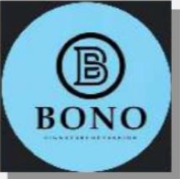
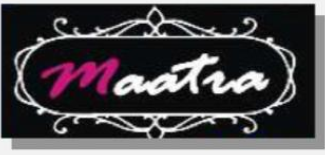
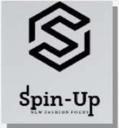

Welcome to Meru Creation LLP
Established in 1989, Meru Creation LLP is a renowned name in the knitwear industry, blending decades of expertise with a commitment to innovation and quality. We specialize in delivering high-quality knitwear products that cater to the needs of both domestic and international markets. From Walmart to Reliance, our diverse clientele speaks volumes about our credibility and dedication to excellence.
With a focus on customer satisfaction, our journey has been defined by constant innovation and a passion for sustainability. Our manufacturing units, equipped with cutting-edge technology, produce 1.5 million units every month, showcasing our ability to handle projects of all scales. At Meru, we believe in not only meeting expectations but exceeding them with every product we deliver.
Guided by our core values of simplicity, entrepreneurship, and cost-consciousness, we aim to make a positive impact on the communities we serve. Whether it’s through our extensive product range or our sustainable business practices, Meru Creation LLP is committed to driving meaningful change in the world of fashion and beyond.
Our Esteemed Brands
  
Our Directors
Brij Dadhich - Designated Partner
Naveen Kumar Choudhary - Designated Partner (Appointed on 1st April 2024)